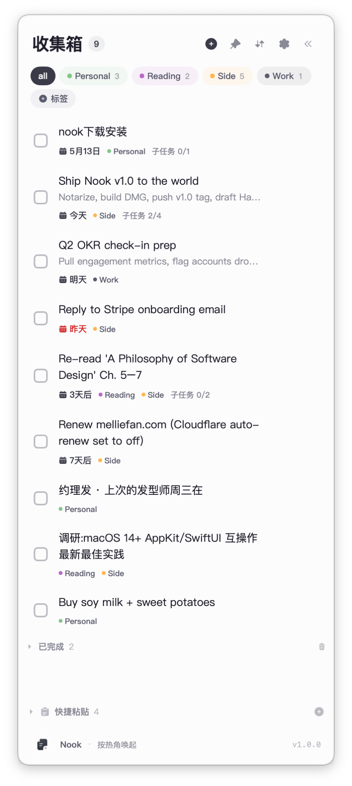
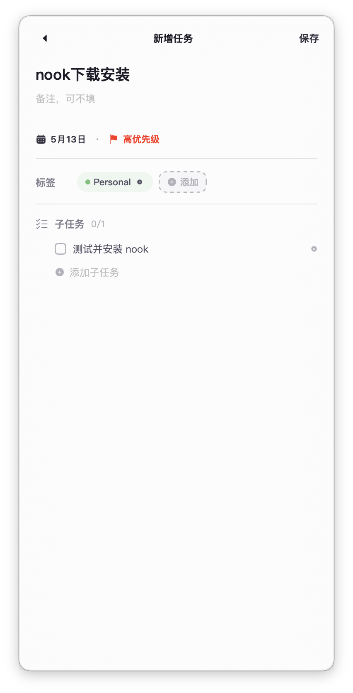
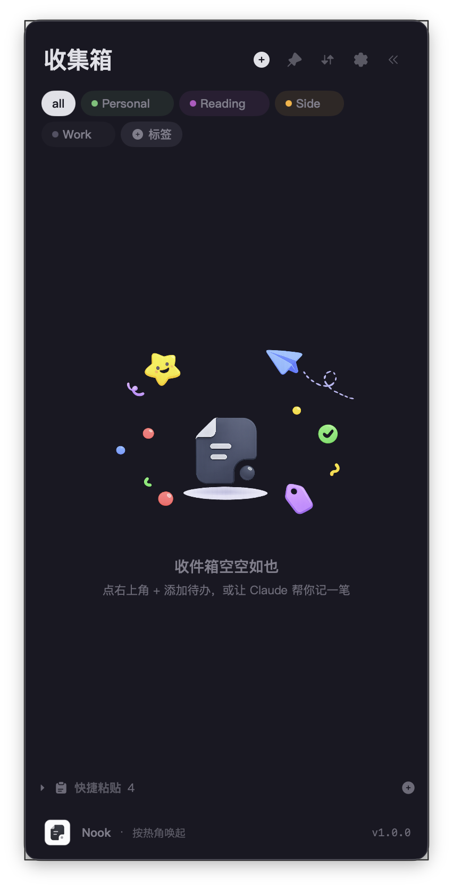

彩色标签
一键按项目、人、场景过滤。
多数 app 在 Dock 或菜单栏占位置。Nook 住在屏幕的角落 —— 平时看不见,鼠标撞到角落它就出现。不用记快捷键,不用启动,只需要一个角落。
一键按项目、人、场景过滤。
不用记快捷键,鼠标推过去就行。
带日期的任务通过 iCloud 自动出现在 iPhone。
终端里 nooktodo "ship the thing" 直接记录。
常用文本存一次,⌥1 / ⌥2 / ⌥3 直接粘。
5MB 安装包,无后台,无账号。




首次打开?macOS 可能会提示验证开发者。右键点击 app → 打开 → 打开(每台机子做一次即可)。
SHA-256 · 0000000000000000000000000000000000000000000000000000000000000000